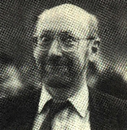
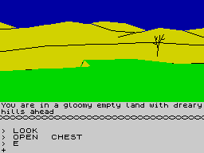
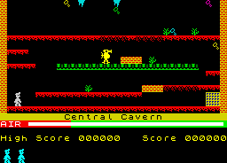

The Golden Years - 1983
1983 was to be Sinclair’s finest hour. After struggling to meet the Christmas demand, sufficient Spectrums were now reaching the shops. By March, 200,000 units had been sold and Sinclair had opened up the rights to sell their products to other major high street retailers such as Boots and John Menzies. The company was now valued at £136m, with profits standing at £13.8m, prompting Clive to sell off 10% of his personal shareholding.
In May, at the height of the Spectrum’s demand, Sinclair slashed the prices to £99.95 for the 16K model and £129.95 for the 48K. The ZX81 was dropped to £39.95, as was the ZX Printer. This succeeded in throwing the competition into disarray and winning the custom of any wavering buyers. With profits soaring, Sinclair concentrated on developing new products, namely the flat-screen TV, the C5 electric car and the QL computer. To complete a memorable year for Clive Sinclair, he received a knighthood in the Queen's Birthday Honours.

In the press, stories about Sinclair's future plans began to circulate. Terms like 'ZX84' were being whispered; a next generation of home computer that would humble the rest of the market. The ZX84 tag was eventually attributed to two of Sinclair's developments: the machine that would eventually become the QL, and the LC-3, an abandoned Super Spectrum concept. While the QL ultimately proved to be an albatross around the company's neck, the decision not to pursue the LC-3 was one that Sinclair would eventually rue. Although it would have used the same processor as the Spectrum, the plan was for it to have a built-in, double mapped screen (requiring less memory and processing power to display images), and a integral microdrive. With the added advantage of being cheaper than the competition (the LC stood for Low Cost), it was bound to have been a winner.
On the software front, 1983 was the year that things really began to take off. A major feature of the home computing thrust was that the machines were there to be programmed and many people turned their hands to producing their own games in the knowledge that there was a hungry market out there. Fledgling companies that had started in bedrooms blossomed into professional programming teams. Still there were no preconceptions and no ideas about what represented good or bad software. With people willing to play just about anything, shops grew wise to the potential of software and cassettes started to appear in the high streets in rapidly increasing numbers.

From the mire of amateur efforts, some quality products were starting to emerge. Melbourne House established themselves a major player with releases such as The Hobbit, a text-based adventure that actually featured graphics, and Penetrator, a conversion of the Konami arcade classic, Scramble.
In the computer press, names such as Anirog, Rabbit, Softek and New Generation were beginning to advertise Spectrum software, while M C Lothlorien were making a name for themselves as the producers of wargames. Meanwhile, Imagine had commissioned full colour, five page ads in the computer press, proclaiming that ‘The Invasion Has Begun!’
Kids who had been weaned on arcades were now able to bring the action that had cost them 10p a time into their homes. What’s more, the home computer was teaching them that entertainment wasn’t just about shooting aliens. Beyond the arcade conversions, there were strategies, adventures and wargames that distinguished the home computer as a more enduring and involving medium than any coin-operated machine.
Amid all the hype and bluster, one software house slipped quietly onto the scene with a handful of titles of the very highest quality: Ultimate. Their four games of this year, Jetpac, Pssst, Cookie and Tranz Am, were graphically slick and highly playable. All four would play on a 16K Spectrum, while other companies were producing far inferior games that required twice the memory.

Other names that had been on the scene since the days of the ZX81 continued to come up with the goods. Quicksilva’s releases included Timegate, which worked on the old Star Trek theme, the frustrating and addictive Mined Out, plus the adventure Velnor’s Lair. The undoubted highlight for Bug Byte was the discovery of a young programmer called Matthew Smith who produced the incredible Manic Miner. Although it was actually an adaptation of Miner 2049er, an old Atari 800 platform game, it became a benchmark for the genre.
A new company called Incentive lived up to their name by offering a novel way of enticing people to buy their software: a £500 prize for the first person to complete their maze game Splat! This idea was taken a step further the following year when Domark offered £25,000 for the first player to solve their adventure, Eureka.
Another notable outfit to appear in 1983 was Spectrum Software, who, after a quiet start, changed their name to Ocean Software and began a steady, calculated conquest of the games market.
Exploiting the new games frenzy, Imagine finished the year in a stronger position than most. Their exaggerated claims, colourful ads and clever use of the media had a convincing effect on a public who were still starry-eyed at the pace and excitement of the new world of computers.
Key Events of 1983
JANUARY: Price cuts for the Spectrum. 16K machine is reduced to £99.95 and the 48K machine drops to £129.95.
MARCH: The Guardian name Clive Sinclair their Young Businessman of the Year.
MAY: Clive Sinclair is knighted.
AUGUST: Matthew Smith completes Manic Miner aged 18.
NOVEMBER: Alan Maton and Matthew Smith leave Bug Byte to form Software Projects. Meanwhile The Currah Microspeech unit is released. Several games, such as Ultimate's Lunar Jetman, incorporate speech with the use of this peripheral.
DECEMBER: Sinclair Research announce record profits for 1982/83 of £14.3 million.
Games of 1983
Wizard's Warriors (Abersoft), 3D Combat Zone (Artic), High Rise Harry (Blaby), Manic Miner (Bug Byte), Test Match (CRL), Halls of the Things (Crystal), Froggy (DJL), 3D Tanx (DK'Tronics), Arcadia (Imagine), Schizoids (Imagine), Zzoom (Imagine), Mountains of Ket (Incentive), Johnny Reb (Lothlorien), The Hobbit (Melbourne House), Penetrator (Melbourne House), Mad Martha (Mikrogen), Space Zombies (Mikrogen), Escape (New Generation), Kong (Ocean), Hunter Killer (Protek), Flight Simulation (Psion), Mined-Out (Quicksilva), Space Intruders (Quicksilva), Timegate (Quicksilva), Velnor's Lair (Quicksilva), Smugglers' Cove (Quicksilva), Invincible Island (R. Shepherd), Cookie (Ultimate), Jetpac (Ultimate), Pssst (Ultimate), Tranz Am (Ultimate)
Films of 1983
The Big Chill, Educating Rita, Flashdance, The King of Comedy, Local Hero, National Lampoon's Vacation, Octopussy, Return of the Jedi, The Right Stuff, Risky Business, Rumble Fish, Scarface, Sudden Impact, Terms of Endearment, Trading Places, Wargames, The Year of Living Dangerously
Singles of 1983
Save Your Love (Renee & Renato), You Can't Hurry Love (Phil Collins), Down Under (Men At Work), Too Shy (Kajagoogoo), Billie Jean (Michael Jackson), Total Eclipse Of The Heart (Bonnie Tyler), Rio (Duran Duran), Let's Dance (David Bowie), True (Spandau Ballet), Candy Girl (New Edition), Every Breath You Take (Police), China Girl (David Bowie), Baby Jane (Rod Stewart), Wherever I Lay My Hat (Paul Young), Give It Up (KC & The Sunshine Band), Gold (Spandau Ballet), Red Red Wine (UB40), Karma Chameleon (Culture Club), Uptown Girl (Billy Joel), Never Never (The Assembly), Only You (The Flying Pickets)